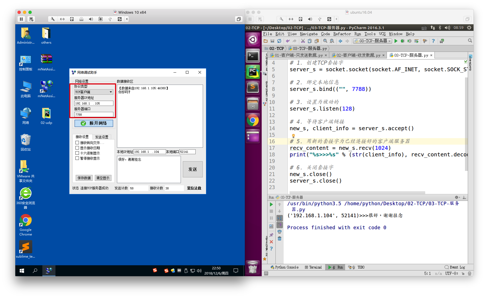
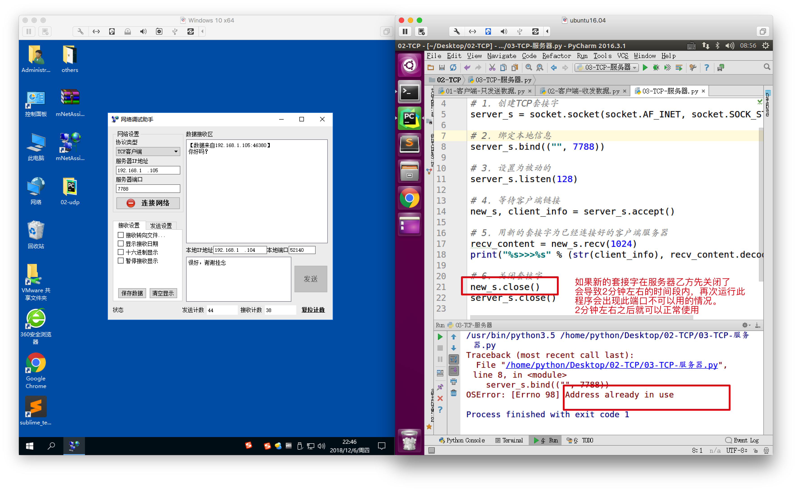
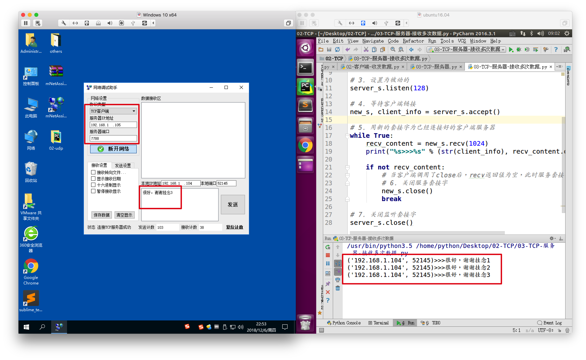
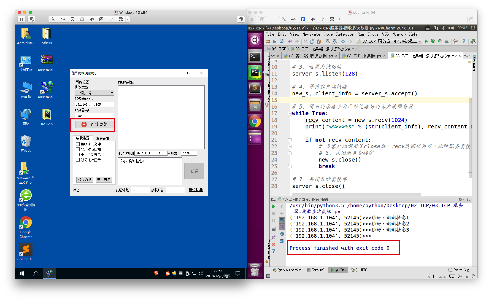

TCP服务器
1. 什么是TCP服务器
为其他的TCP程序提供服务的程序，称之为TCP服务器
2.构建TCP服务器流程
2.1 类比生活中的电话机
如果想让别人能打通我们的电话获取相应服务的话，我们需要做以下几件事情：
- 买个手机
- 插上手机卡
- 设计手机为正常接听状态（即能够响铃）
- 静静的等着别人拨打
- 然后听、说（即服务）
- 等待客户挂断电话后，自己也挂断电话
2.2 创建TCP服务器的代码流程
如同上面的电话机过程一样，在程序中，如果想要完成一个TCP服务器的功能，需要的流程如下：
- socket创建一个套接字
- bind绑定ip和port
- listen使套接字变为被动链接
- accept等待客户端的链接
- recv/send接收发送数据
- close关闭套接字
3. TCP服务器示例
3.1 接收1次数据（不推荐的做法）
import socket
# 1. 创建TCP套接字
server_s = socket.socket(socket.AF_INET, socket.SOCK_STREAM)
# 2. 绑定本地信息
server_s.bind(("", 7788))
# 3. 设置为被动的
server_s.listen(128)
# 4. 等待客户端链接
new_s, client_info = server_s.accept()
# 5. 用新的套接字为已经连接好的客户端服务器
recv_content = new_s.recv(1024)
print("%s>>>%s" % (str(client_info), recv_content.decode("gbk")))
# 6. 关闭套接字
new_s.close()
server_s.close()

如上图所示，服务器能够正确的接收到客户端发送过来的数据

3.2 接收多次数据（推荐的做法）
import socket
# 1. 创建TCP套接字
server_s = socket.socket(socket.AF_INET, socket.SOCK_STREAM)
# 2. 绑定本地信息
server_s.bind(("", 7788))
# 3. 设置为被动的
server_s.listen(128)
# 4. 等待客户端链接
new_s, client_info = server_s.accept()
# 5. 用新的套接字为已经连接好的客户端服务器
while True:
recv_content = new_s.recv(1024)
print("%s>>>%s" % (str(client_info), recv_content.decode("gbk")))
if not recv_content:
# 当客户端调用了close后，recv返回值为空，此时服务套接字就可以close了
# 6. 关闭服务套接字
new_s.close()
break
# 7. 关闭监听套接字
server_s.close()

如上图所示，服务器可以接收多次数据

如上图所示，当左侧Windows中的客户端先关闭后，右侧的服务器紧接着自动关闭了
这种做法的主要特点：让客户端先关闭，服务器然后再关闭。这么做的好处
- 不会导致客户端还没有被服务完，就被关闭了
- 服务器端紧接着运行，不会出现Address already in use的问题，即不需要等2分钟左右的时间
4. 小总结
- 服务器端需要做的事情基本固定
- 创建套接字
- 绑定本地信息
- 变为监听套接字（被动套接字）
- 等待客户端链接，创建一个新的服务套接字
- 用服务套接字为客户端服务
- 等待客户端先关闭，然后再关闭套接字